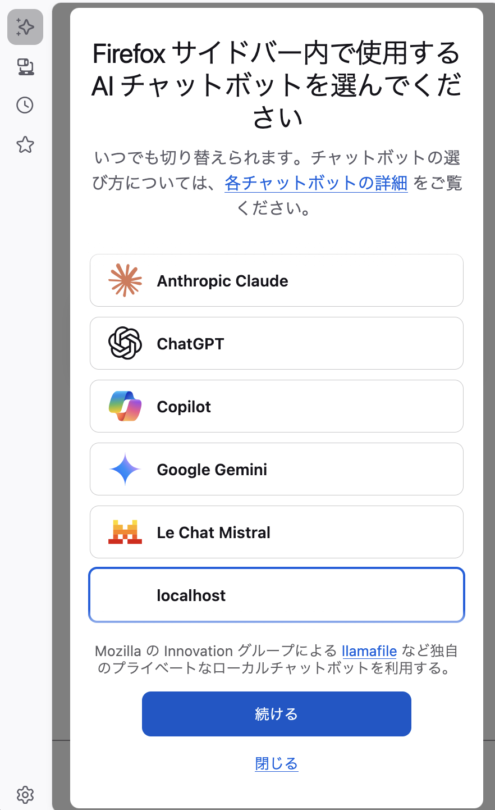
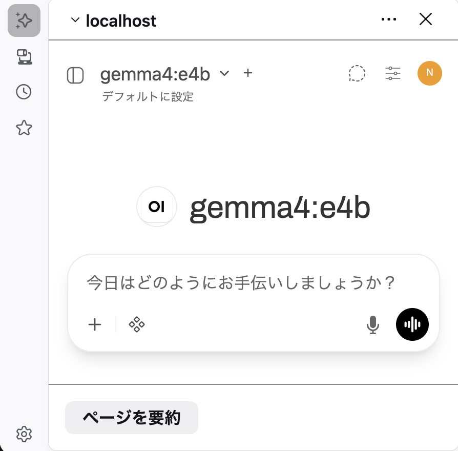

ローカルLLMをFirefoxに住まわせる
- Event:
ローカルLLMやってみたLT会！
- Presented:
2026/05/29 nikkie
Firefoxのサイドバー にローカルLLM
ページ全体を日本語で要約
選択範囲にプロンプト
お手元でデモが再現できるよう、設定を共有します
登場人物
Firefox：AI制御 (AI controls) 機能 (Firefox 148〜)
構成
flowchart TD
A[Firefox<br>AI制御] -->|iframe| B[Open WebUI<br>localhost:8080]
B -->|Ollama API| C[Ollama<br>localhost:11434]
C --> D["gemma4:e4b"]
手順1：OllamaでGemmaをサーブ
$ ollama --version
ollama version is 0.22.0
$ ollama pull gemma4:e4bOllama API 動作確認
% curl http://localhost:11434/api/tags手順2：Open WebUIを起動
% uv tool install open-webui
% DATA_DIR=~/.open-webui open-webui servehttp://localhost:8080/ でOpen WebUIが開きます
手順3：Open WebUIを設定
初回ウィザードで管理者アカウントを作成
Ollama API接続の管理
http://localhost:11434（デフォルト値のまま）
Open WebUI上で
gemma4:e4bが選べればOK
手順4：Firefoxの設定
設定 > AI制御 を有効に（「AI支援をブロックする」false）
タブで
about:configを開く
browser.ml.chat.hideLocalhostこれを false にします
Firefox サイドバー > AIチャットボット で選択
{kind=link}

ボタン1つで 要約させ放題！
{kind=link}

まとめ🌯：ローカルLLMをFirefoxに住まわせる
Gemma4:e4bをOllamaでAPIにし、Open WebUIでFirefoxに住まわせた
FirefoxのAI制御はiframeで Web UI を埋め込める
呼び出し放題 はいいぞ
一度設定したら、ふだんのコマンドはこれだけ
% # OllamaはPC起動時に起動する設定
% DATA_DIR=~/.open-webui open-webui servePC起動時にOpen WebUIの自動起動設定の余地あり
ご清聴ありがとうございました
nikkie(にっきー) / @ftnext / Codex Ambassador (Tokyo)
機械学習エンジニア（We're hiring!）・Speeda AI Agent 開発（A2A提供）